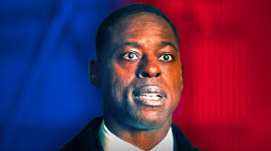

Paradise Characters
Xavier Collins
Portrayed by: Sterling K. Brown
Xavier is characterized by his calm demeanor and quick reflexes, which serve him well in high-pressure situations. He has an athletic build, and his keen awareness allows him to anticipate potential dangers before they arise. His dedication to his role is evident in his meticulous attention to detail, whether it's planning secure routes for the President's travels or conducting thorough risk assessments for events.Despite the serious nature of his job, Xavier possesses a personable charm that helps him connect with both colleagues and the public. He often finds himself in situations where he must balance the rigid demands of security with the need for the President to engage with constituents, showcasing his ability to adapt and think on his feet.
President Cal Bradford
Portrayed by: James Marsden

In his late 40s, Cal Bradford is a charismatic and pragmatic leader who has risen to the highest office with a vision of unity and progress. With a background in law and public service, he possesses a sharp intellect and a deep understanding of the political landscape. Cal is known for his ability to connect with people from all walks of life, using his charm and eloquence to inspire trust and loyalty among his constituents.